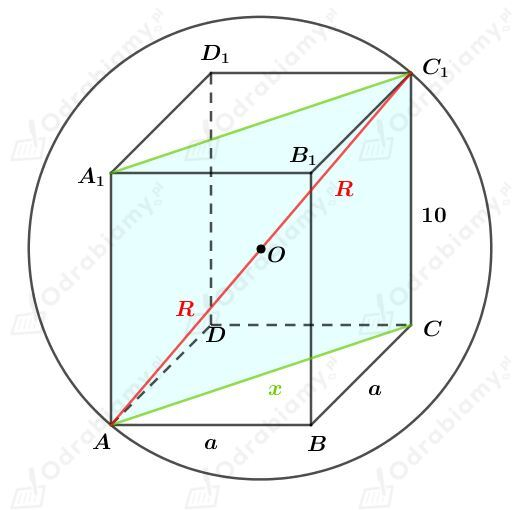
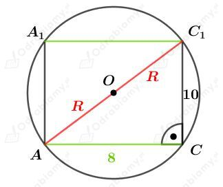
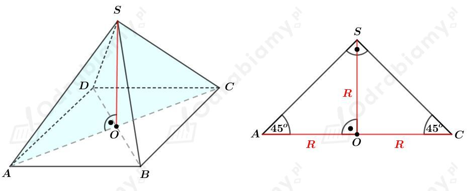

a)
Rysunek:

Wiemy, że pole powierzchni podstawy tego graniastosłupa jest równe 32 cm2 otrzymujemy:
Odcinek AC jest przekątną kwadratu, czyli
Rozpatrzmy prostokąt ACC1A1 będący przekrojem tego graniastosłupa przechodzącym przez przekątne AC i A1C1 podstawy graniastosłupa.
Rysunek:

Korzystając z twierdzenia Pitagorasa dla trójkąta ACC1 mamy:
Wyznaczmy objętość tej kuli. Mamy:
b)
Dana jest kula o promieniu długości R i polu powierzchni 12𝜋 cm2. Mamy stąd:
W podaną kulę wpisano sześcian o boku długości a.
Długość przekątnej sześcianu jest równa podwojonej długości promienia tej kuli. Mamy stąd:
Wyznaczmy objętość tego sześcianu. Mamy:
Rysunek:

Wiemy, że trójkąt ACS jest prostokątny, więc punkt O jest środkiem okręgu opisanego na tym trójkącie. Więc punkt O jest środkiem kuli opisanej na tym ostrosłupie. Zatem
oraz
Wyznaczmy pole powierzchni podstawy tego ostrosłupa. Korzystając ze wzoru na pole rombu mamy:
Wyznaczmy objętość tego ostrosłupa. Mamy: